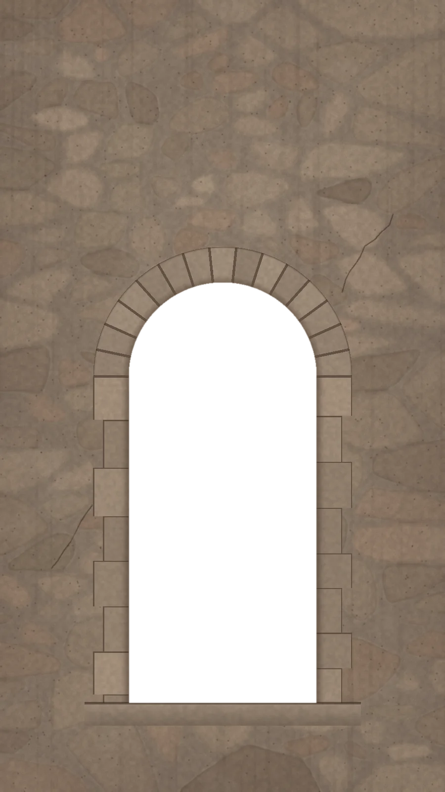

Sábado 20 · 03 · 2027
Roxana
& Adrián
Una vida para celebrar
Toca la llama
Muy pronto
aquí encenderás tu invitación

Sábado 20 · 03 · 2027
Una vida para celebrar
Toca la llama
Muy pronto
aquí encenderás tu invitación